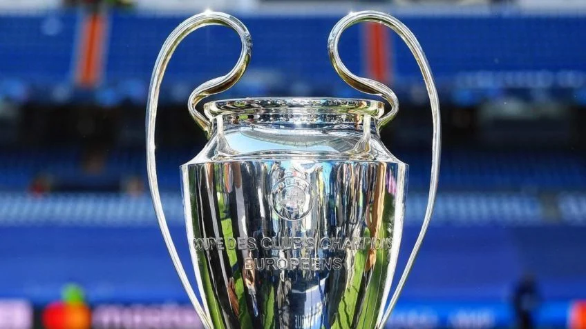

O que é a Champions League?
Evento que acontece em Macaúbas-BA, geralmente no boqueirão ou na quadra localizada no loteamento do Robinho, ocorre geralmente no Sábado entre jogadores de todos evangélicos, visando o desenvolvimento, retiro, títulos, união dos jovens cristãos e saúde.
Quantas edições existem até o momento?
Até o exato momento a UBFC Champions League contém 16 edições.
O que significa UBFC ?
O UBFC é a sigla usada para se referir a União Brasileira de Futebol Cristão.